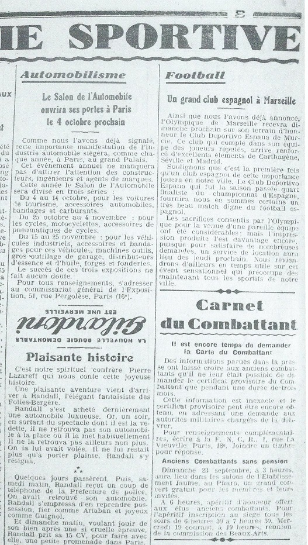
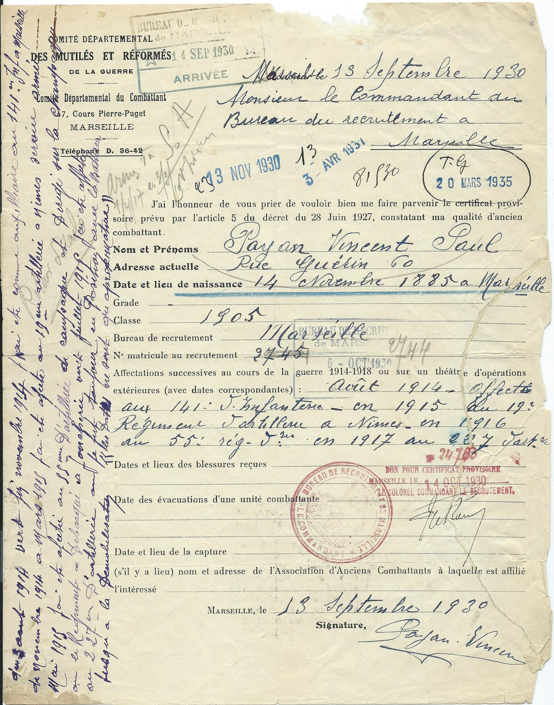

|
Le 19 décembre 1926 est crée l'Office national des Combattants. « Le bénéfice des institutions de l'Office national des Combattants est réservé aux titulaires de la carte de Combattant » précise le décret du 28 juin 1927 qui ajoute : « Les combattants recevront une carte d'identité spéciale, dite "carte du Combattant". Toutefois tiendra lieu provisoirement de carte du Combattant un certificat constatant la qualité de Combattant qui sera délivré sur demande des intéressés ». Pour obtenir cette carte Vincent entame une longue procédure. |
 "Le Petit Provençal", 18 septembre 1928 |
|
Demande de Vincent, le 13 septembre 1930, pour obtenir un «certificat provisoire» constatant sa « qualité de Combattant» et « tenant lieu provisoirement de carte de combattant » (conformément au décret du 28 juin 1927). Un tampon indique que la demande est reçue le 14 septembre. Vincent se trompe sur son numéro matricule au recrutement : il écrit 2745 au lieu de 2744 ; le numéro de matricule est corrigé au crayon ; au crayon aussi, dans la marge, des indication difficiles à déchiffrer : « ? détaché Armes S.A. » (service auxiliaire ?) ; deux dates figurent aussi :" 1/4/17 au 3/3/19" : le 1/4/17 la 43e batterie du 55e RAC devient la 29e batterie du 227“ RAC ; le 3/3/19 marque la démobilisation de Vincent, dates qui ont pu permettre de corriger son matricule. Vincent précise brièvement ses affectations successives : 141e d'infanterie ; 15e régiment d'artillerie ; 55e régiment d'artillerie ; 227e régiment d'artillerie Le bureau de recrutement a dû lui renvoyer très rapidement alors son formulaire en lui demandant de nouvelles précisions (sans doute à cause de l'erreur de matricule) : Vincent complète alors en marge (avec une autre encre que les premières indications) : et retourne à ce Bureau le document (tampon de réception du 6 octobre 1930) : «Du 3 août 1914 vers fin novembre j'ai été comme auxiliaire au 141e Inf. À Marseille ; de novembre 1914 à mars 1915 j'ai été affecté au 19e d'Artillerie à Nîmes service armée ; mai 1915 j'ai été affecté au 55e d'Artillerie de Campagne et dirigé sur la Champagne où le régiment a débarqué à Joncherie vers juillet 1915 ; j'ai été affecté au 227e d'Artillerie où je fus toujours en position avec la batterie jusqu'à la démobilisation ; les dates ne sont qu'approximatives » Cette dernière indication semble montrer qu'il n'a pas dû conserver de documents précis sur cette période. Il retourne à ce Bureau le document (tampon de réception du 6 octobre 1930). Le « bon pour certificat provisoire » est alors accordé le 14 octobre sous le numéro 24703. Ce document est resté au Comité départemental du Combattant, et a été consulté par la suite, comme en témoignent les tampons successifs du 13 novembre 1930 (cf. demande de certificat provisoire), 3 avril 1931 (?) et 20 mars 1935 (cf. nouvelle demande de carte), versé ensuite aux Archives départementales. Le document nous apprend aussi que Vincent n'était pas affilié à une association d'Anciens Combattants. |
 |